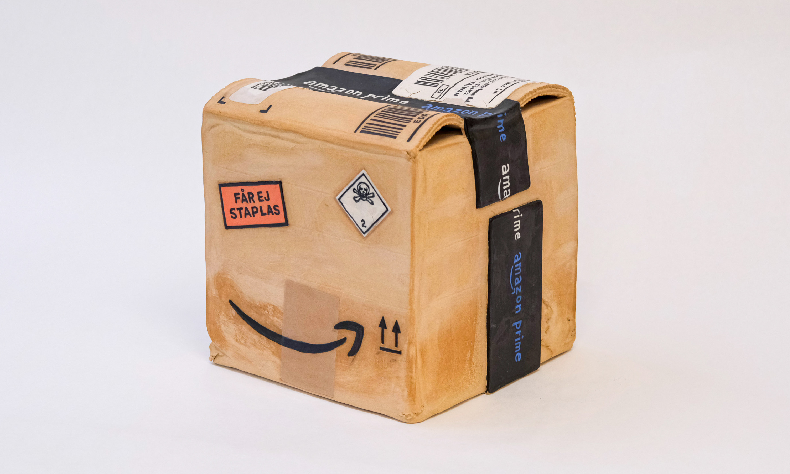
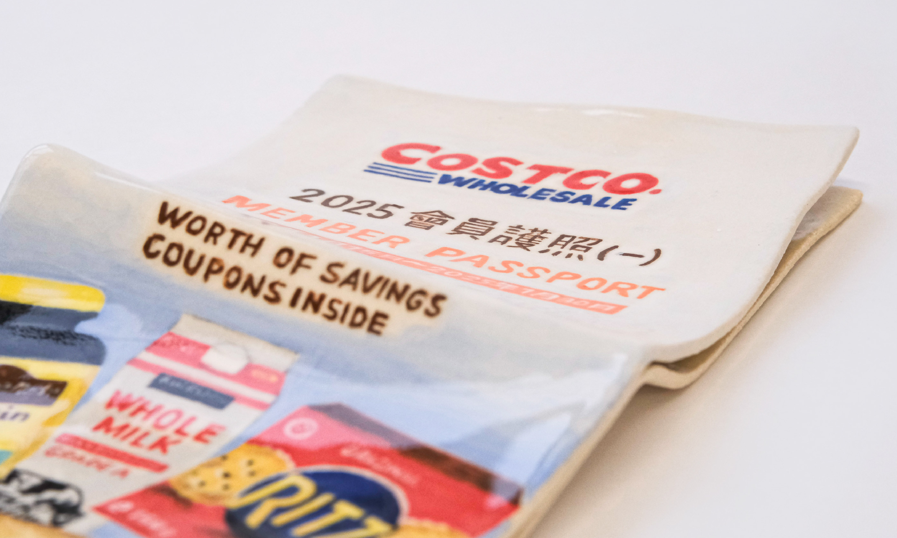
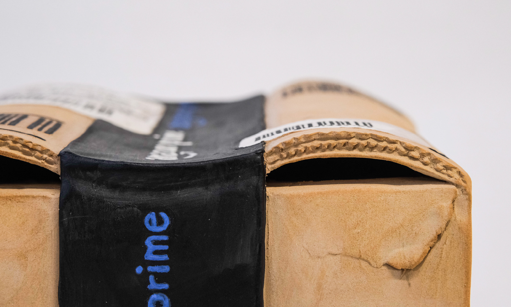
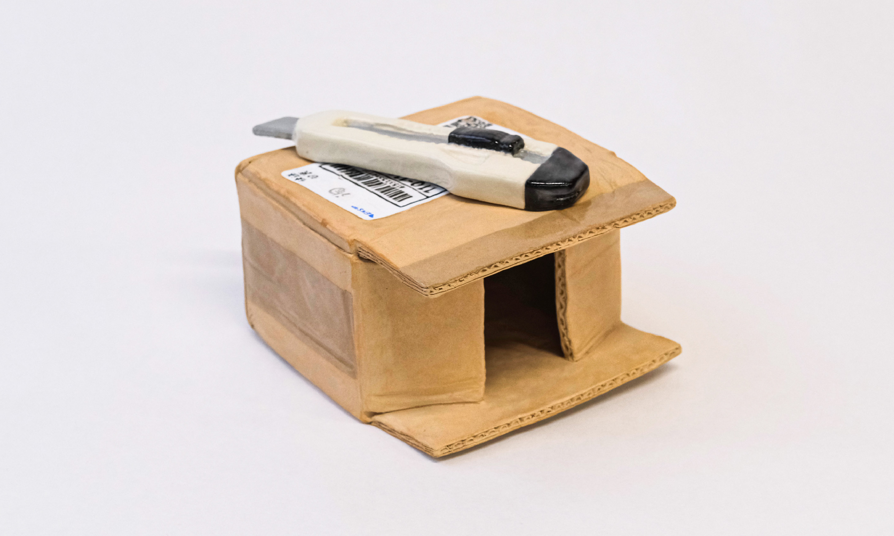
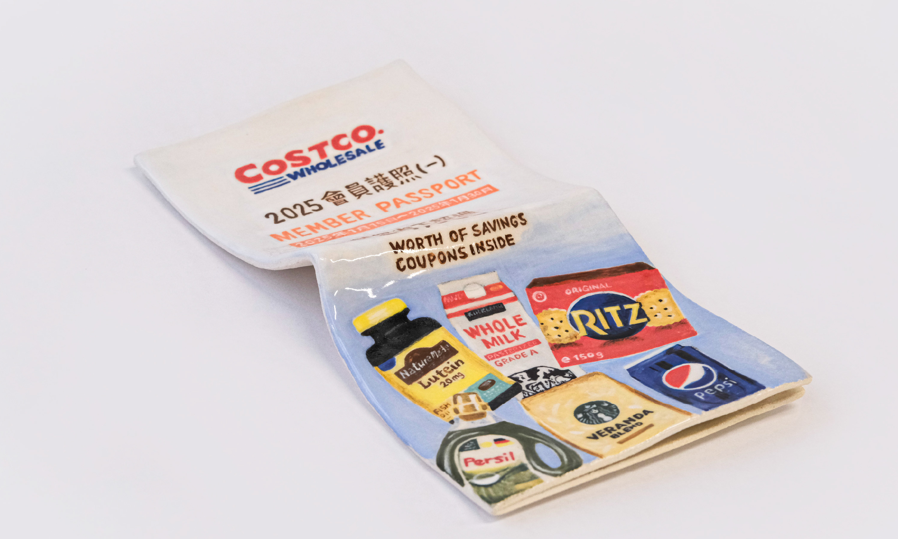
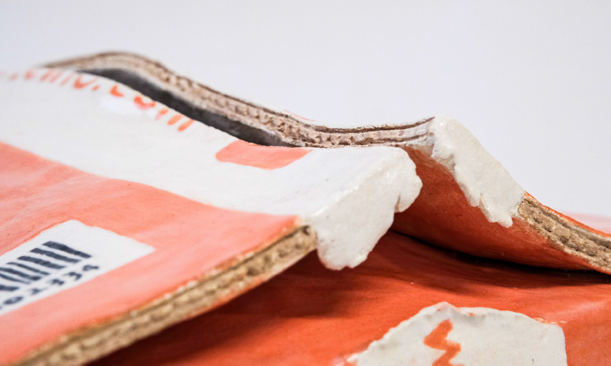
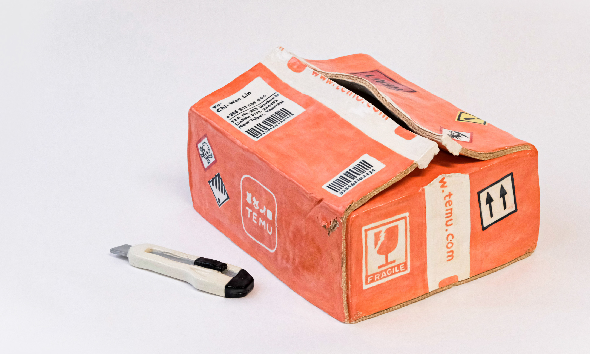

Unboxing: The hegemony behind everyday objects
This project was inspired by an incident that happened in Taiwan last year.
A local beverage shop owner ordered a box of plastic beverage film with cute cartoon
graphics from a Chinese e-commerce platform. When the order arrived,
the seals featured the expected cute designs but were also emblazoned with a unified slogan:
“My motherland and I cannot be separated even for a moment.” Through this case, I wanted to explore how ordinary consumer goods can act as subtle vessels for hegemony, propaganda, and neo-colonial agendas.






